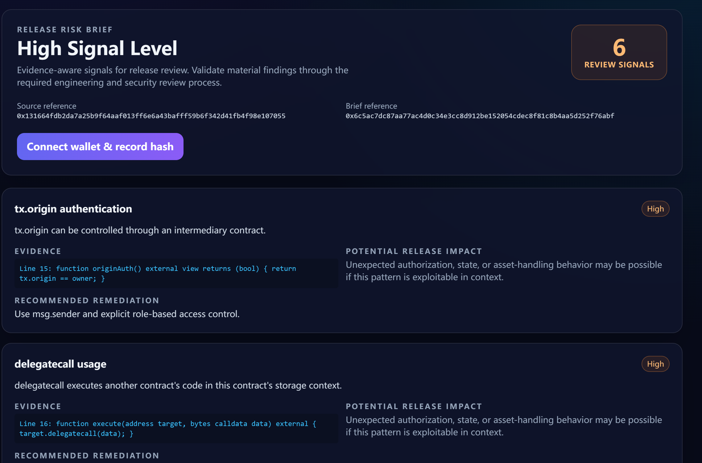
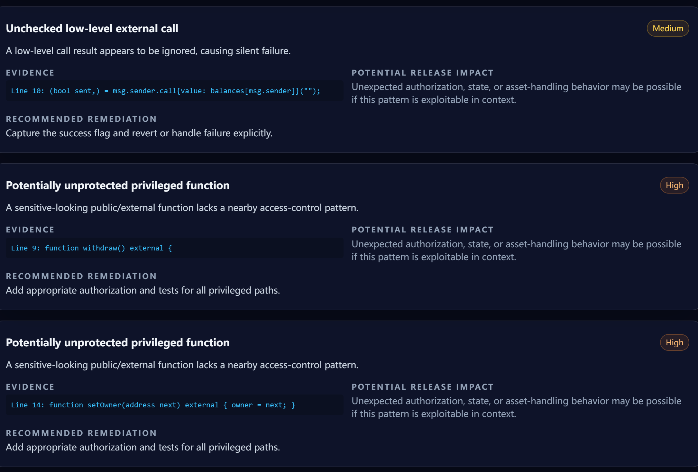
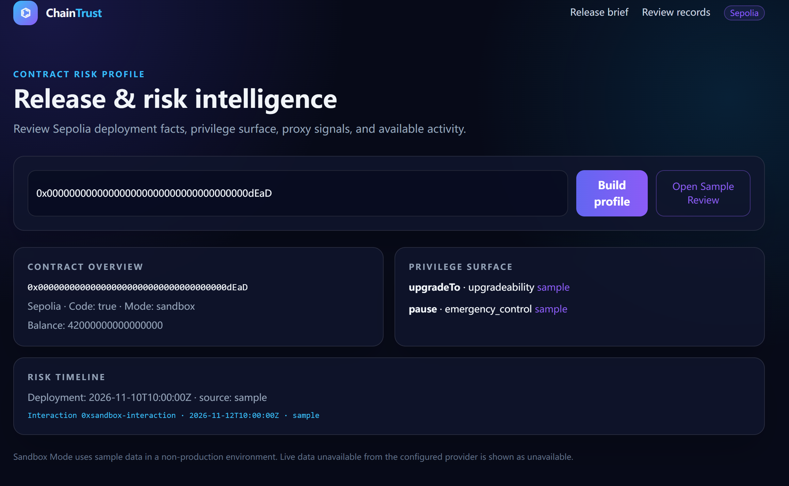
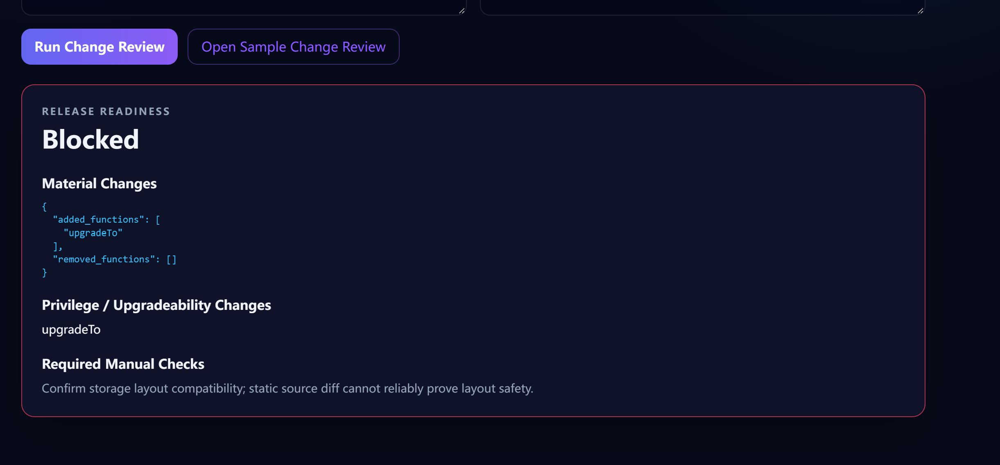
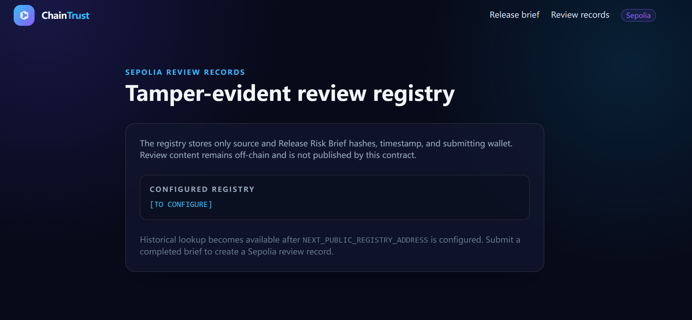

项目背景与目标
智能合约发布前的判断往往散落在源码检查、链上浏览器、人工评审记录和聊天讨论中。ChainTrust 把这些环节组织成一个可重复的工程流程：输入源码或测试网地址，提取可定位的风险证据，生成结构化审查简报，再用哈希记录证明某份源码与某次审查结果之间的对应关系。
产品边界：ChainTrust 是工程审查辅助工具，不提供“合约安全”保证，也不能替代专业安全审计。链上能力限定在 Sepolia 测试网；未配置 RPC 或 Explorer 时，系统明确显示数据不可用或使用标记为 Sandbox 的样例数据。
我的个人职责
独立完成
- 定义目标用户、核心审查流程与安全声明边界。
- 设计 Next.js、FastAPI、PostgreSQL 与 Sepolia 的全栈架构。
- 实现 Solidity 静态规则、权限面分析、代理检测与版本差异审查。
- 实现 OpenAI 结构化风险简报与无密钥时的确定性降级路径。
- 实现钱包连接、哈希生成与 AnalysisRegistry 测试网登记合约。
- 编写 API、规则、源码绑定和 Solidity 合约测试用例。
刻意控制的范围
- 只把发现描述为风险信号，不声称漏洞一定可利用。
- 链上只保存哈希、时间戳和提交钱包，不公开源码或报告正文。
- 未配置外部服务时保持核心扫描可运行，避免隐藏依赖。
- 真实部署地址与线上 Demo 尚未提供，因此不作上线声明。
核心功能
- 源码风险扫描：识别
tx.origin、delegatecall、未保护的高权限函数、低级调用和重入相关顺序信号。 - Release Risk Brief：把规则发现转换为带严重度、证据、潜在影响、修复建议和限制说明的结构化输出。
- 合约风险画像：读取 Sepolia 代码、余额、部署信息、交互记录与 EIP-1967 implementation slot，并区分 confirmed、heuristic 和 unavailable。
- Change Review：对比基线与候选 Solidity 源码，标出新增函数、权限面变化、升级入口与必须人工确认的检查项。
- 可篡改证据记录：通过 ethers.js 把源码哈希与简报哈希写入 AnalysisRegistry；报告内容继续保留在链下。
- 离线降级：缺少 OpenAI 密钥时使用规则结果生成确定性简报；缺少 RPC 时不伪装成实时链上数据。
产品界面










系统架构
Next.js WorkspaceREST →FastAPI→PostgreSQL
Rule Scanner+Privilege / Proxy Analysis→Structured AI Brief
ethers.js Wallet→Sepolia→AnalysisRegistry
报告正文与源码保存在链下；测试网合约只登记哈希引用、时间戳与分析者钱包。
技术难点与解决方案
LLM 输出不能成为未经约束的安全结论
先由确定性规则产生证据，再通过严格 JSON Schema 生成简报；系统提示禁止声称完整性、可利用性或安全保证，并在没有模型密钥时回退到规则驱动结果。
链上、源码与外部 API 的可信度不同
每类信号携带 evidence type、confidence 和 data status。RPC 链 ID 必须是 11155111；Explorer 或 RPC 缺失时返回 unavailable，而不是补造数据。
证明审查记录，同时避免把敏感内容上链
对规范化源码和结构化简报分别计算哈希，合约只保存引用。这样能验证对应关系，同时控制 gas 成本和源码/报告暴露风险。
升级审查不能只比较文本
Change Review 聚焦新增高权限入口、低级调用与升级相关函数，并强制保留“检查存储布局兼容性”等人工步骤，明确静态差异分析的能力边界。
验证方法
- FastAPI 测试覆盖结构化分析响应、Sandbox Change Review、Sepolia-only 校验、源码绑定和 EIP-1967 地址解析。
- 规则扫描测试验证
TX_ORIGIN、DELEGATECALL、未保护权限与重入模式信号。 - Hardhat 测试覆盖哈希记录、分析者钱包保存和零哈希拒绝。
- 本次作品集整理检查了测试代码与实现对应关系；由于当前运行环境未安装项目 Python 测试依赖，未在此处声称测试已重新执行通过。
下一步
- 持续完善公开仓库的提交记录、Issue 与发布说明。
- 部署 AnalysisRegistry 到 Sepolia，公开合约地址与示例交易。
- 部署 Web/API/PostgreSQL，增加端到端测试、可观测性与失败告警。
- 用经过授权的真实合约样本评估误报、漏报与人工审查时间变化。